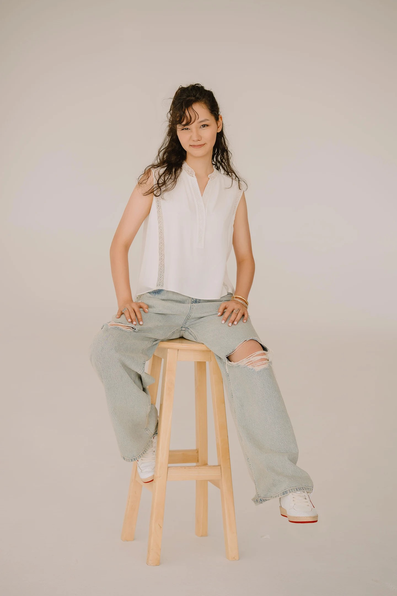

Hi, my name is Aiya!
I was born and raised in Almaty, Kazakhstan, where I grew up painting and exploring the world through art. From still lives and portraits to sculptures and human-size oil paintings, I found my passion in creativity.
When I came to Parsons, design transform the way I approach and think about creativity and became a way to contribute to the world around me. From painting for loved ones, designing brand assets for local corporations, and working on UX projects. I am dedicated to creating designs that make lives of people easier, designing for people is where my passion is at right now.
Outside of work, I love staying creative through painting, reading, and re-imagining existing designs; this keeps my thinking fresh and inspires me in the work process. I also love staying active through pilates and yoga.
Let’s connect and create something cool together!